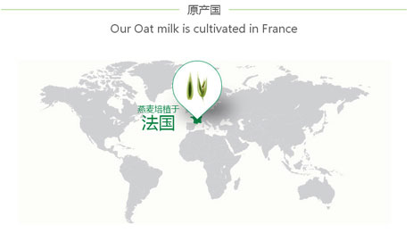

植萃简介 - 燕麦

- 植物描述
- 燕麦是一年生草本植物，在夏末收获。它可以长到2至5英尺高。根系发达，茎微微弯曲，茎的顶端有小花。
- 传统用途
- 燕麦一直以来被用于刺激人体食欲，缓解喉咙痛，并对失眠或神经疲劳具有良好的缓解作用。燕麦可用于减轻皮肤瘙痒、 湿疹、肿痛和干燥。

康如精选法国西南部的有机种植燕麦，富含脂类及维他命，具有柔滑、保护及滋润发质的功效。 康如采用“燕麦不磨碎，整粒萃取”的植物萃取技术，完好的保存燕麦的有效成分燕麦萃取精华维护头皮与头发的自然平衡，令头发更强韧，散发自然光泽。非常适合全家使用。